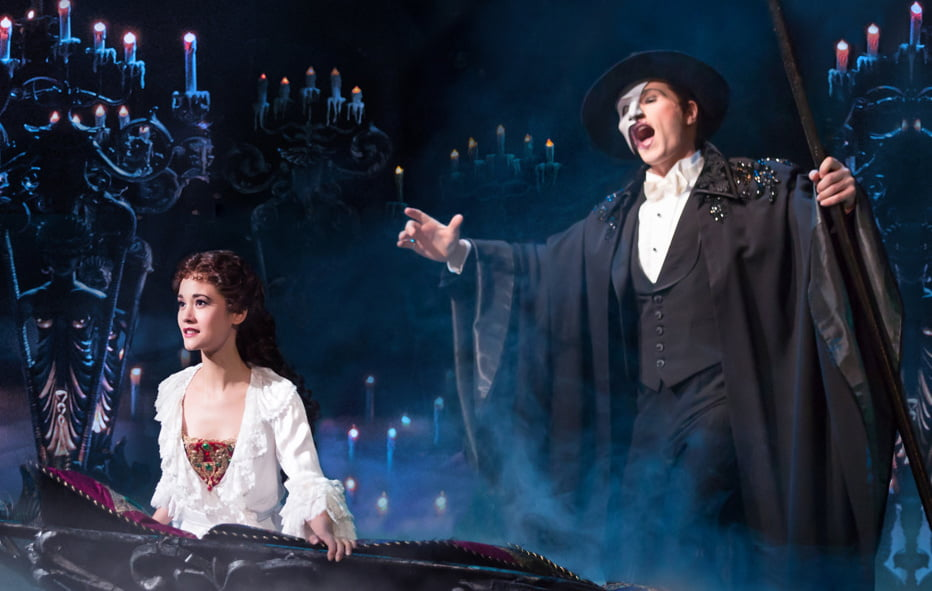

"O Fantasma da Ópera" é um romance gótico do escritor francês Gaston Leroux, publicado em 1909. A história narra os acontecimentos sombrios na Ópera de Paris, onde um fantasma deformado se apaixona pela jovem cantora Christine Daaé e a ensina a cantar. A obra, que combina terror, paixão e mistério, inspirou o famoso musical de Andrew Lloyd Webber e várias adaptações para o cinema